The AH Solution blog
Practical guides for the tech you already own.
Seventeen long-form walkthroughs written from the AH Solution videos — Android apps and safety, smartphone photography, Windows and PC tips, remote access, laptops and smartwatches — plus the original how-to guides. Read at your own pace, jump straight to the step you need.
Every guide keeps its source video linked, its steps in order, and its limitations written down.
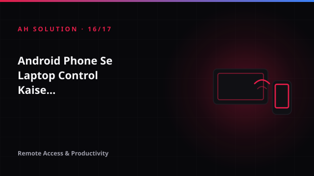
Remote Access & ProductivityAndroid Phone Se Laptop Control Kaise Karein: Chrome Remote Desktop
Kabhi aap office se nikle hue hain aur zaroori file laptop par chhod aaye hain? Ya chaho ke laptop par koi document edit kar lo bina laptop uthaye? Chrome Remote Desktop ka use karke aap apne laptop ko Android phone se remotely access aur control kar sakte hain.
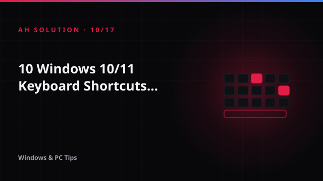
Windows & PC TipsWindows 10/11 ke 10 Keyboard Shortcuts Jo Roz Kaam Aayenge
Keyboard shortcuts mouse clicks ko kam karke aapka kaam bohot fast bana sakte hain. Har baar mouse uthana aur click karna time waste karta hai, jabki ek simple shortcut se wahi kaam kuch hi seconds mein ho jaata hai.
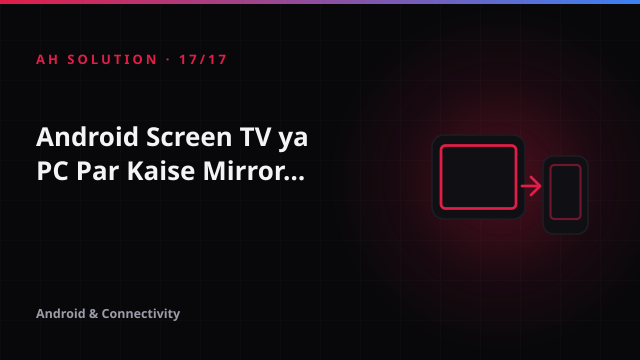
Android & ConnectivityAndroid Screen TV ya PC Par Kaise Mirror Karein: Wireless Options
Kabhi socha hai apne phone ka screen bade TV par dikhayein ya PC par mirror karein bina kisi extra app ke? Video "How to Mirror Your Android Screen to TV or PC Without an App! 📱➡️📺" isi topic ko cover karta hai.
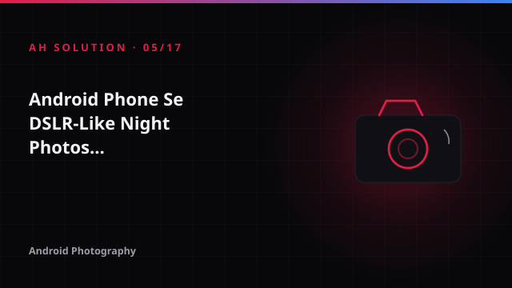
Android PhotographyAndroid Phone Se DSLR-Like Night Photos Kaise Lein: Long Exposure Guide
Night photography kaafi logon ke liye challenging lagti hai. Ambient light kam ho to phone camera noise badha deta hai, details lose hoti hain aur shots blurry niklte hain. Is guide ka focus yahi hai ki sensor upgrade se pehle technique par kaam karein.
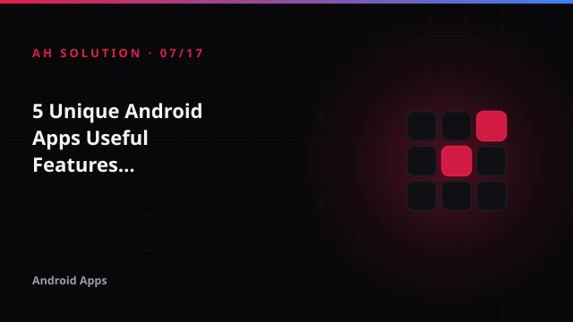
Android Apps5 Unique Android Apps: Useful Features aur Privacy Checks
Android ecosystem mein har roz naye apps aate hain, lekin zyada tar viral apps sirf gimmick hote hain. Is article ka focus hai — "unique" apps blindly install karne se pehle kaise evaluate karein.
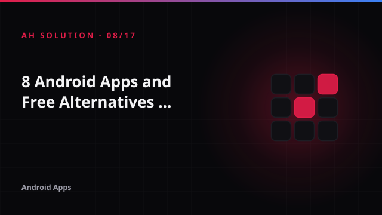
Android Apps8 Android Apps aur Free Alternatives: Install Karne Se Pehle Yeh Check Karein
Kai baar hum paid app ka free alternative dhundhte hain, lekin har "free" app sach mein free nahi hota — kuch freemium hote hain, kuch ads se chalte hain aur kuch data tracking se.
 Android Apps & Privacy
Android Apps & PrivacyWhatsApp Deleted Messages aur WAMR: Kaise Kaam Karta Hai?
WhatsApp par message aaya, aapne notification nahi dekhi, aur sender ne "Delete for Everyone" se message delete kar diya - ab wo gaya? Original AH Solution video (July 2020) isi frustration par hai: WAMR jaise apps ka tutorial jo deleted messages dikhane ka dawa karte hain.
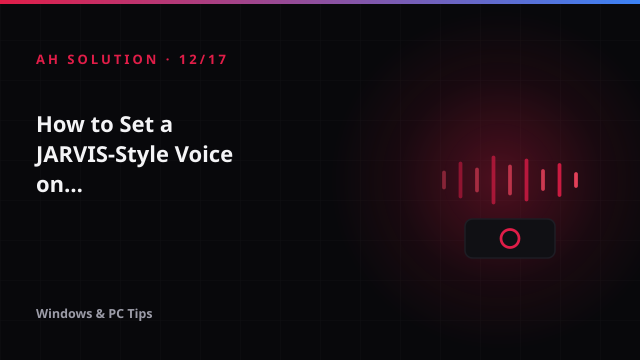
Windows & PC TipsWindows Startup Par JARVIS Jaisi Voice Kaise Set Karein
Movies mein JARVIS jaisa AI assistant sun ke lagta hai ki kaash apna PC bhi aise welcome karta ho. Original AH Solution video isi idea par hai - Windows startup par apni custom welcome voice set karna.
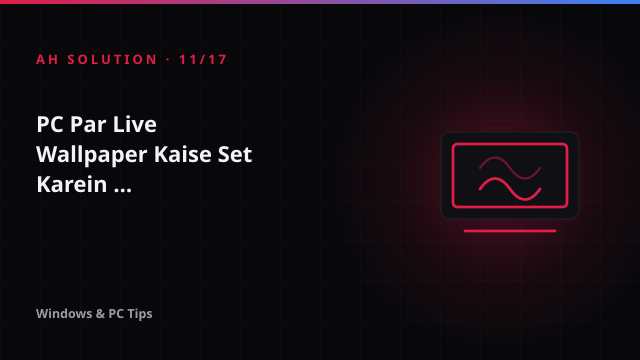
Windows & PC TipsPC Par Live Wallpaper Kaise Set Karein: MLWApp Guide
Static wallpaper se desktop thoda boring ho jaata hai. Bahut log chahte hain ki unki screen par koi animated scene chalta rahe - nature video, abstract loop ya favourite clip.
 Browsers & Privacy
Browsers & PrivacyBrave vs Chrome: Privacy, Speed aur Daily Use Comparison
Aaj kal hum sab online kaafi time spend karte hain. Har click, har search aur har website visit ke saath humara data collect hota hai. Yahi wajah hai ki browser choose karte waqt sirf speed nahi, balki privacy bhi ek important factor ban chuka hai.
 Streaming & Digital Safety
Streaming & Digital SafetyTHOP TV aur Free Streaming Apps: Legal aur Security Risks Samjhein
2020 mein viral hue kai aise short clips ne bina license ke content free dene wale apps ka hype create kiya tha. Isi context se related video "THOP TV|| Free NETFILX , FREE AMAZON PRIME , FREE ULLU, Free Free Free !!!!!" ne ek trend ko highlight kiya tha.
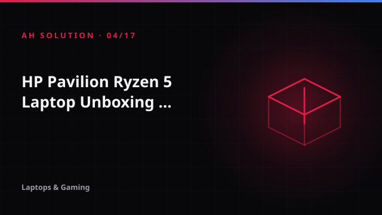
Laptops & GamingHP Pavilion Ryzen 5 Laptop Unboxing: Kya Check Karna Chahiye?
Naya laptop milte hi box khulta hai aur Windows setup shuru ho jaata hai — lekin isi rush mein kai checks chhut jaate hain. Seal intact hai ya nahi, charger sahi wattage ka hai ya nahi, invoice ka model number box se match karta hai ya nahi — yeh cheezein baad mein yaad…
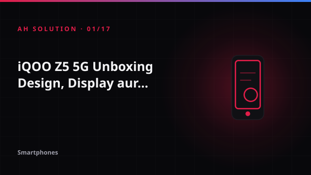
SmartphonesiQOO Z5 5G Unboxing: Design, Display aur Key Features
December 2021 mein AH Solution par ek 13-second ka Short aaya tha jisme iQOO Z5 5G ka unboxing aur first look dikhaya gaya. Itna chhota format hota hai ki clip khatam hi ho jaati hai — na box ke har accessory par time milta hai, na koi verdict.
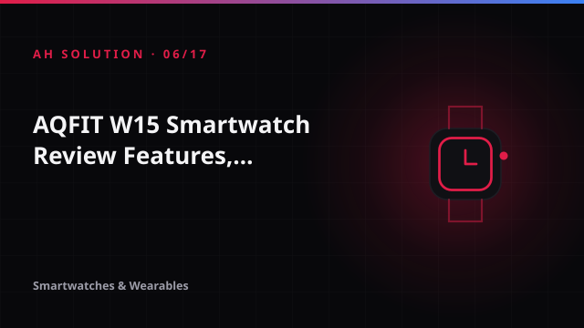
Smartwatches & WearablesAQFIT W15 Smartwatch Review: Features, Fit aur Buying Advice
Budget smartwatches un logon ke liye popular hain jo basic fitness tracking aur notifications chahte hain bina heavy investment ke. AQFIT W15 isi category ka 2021 ka model hai.
 Laptops & Gaming
Laptops & GamingMSI GF63 Gaming Laptop Review: Kharidne Se Pehle Kya Check Karein?
November 2021 mein publish hone wale AH Solution review ka title tha "MSI GF63 Gaming Laptop Review – Worth Buying?" — aur yeh wahi daur tha jab festive sale (Big Billion Days wale offers) apne peak par tha.
 Laptops & Gaming
Laptops & GamingHP Pavilion Gaming Ryzen 5 3550H Review: Specs aur Buying Checklist
October 2021 mein AH Solution ne HP Pavilion Gaming laptop par ek unboxing-review video publish kiya — title tha "HP Pavilion Gaming Ryzen 5 3550H Unboxing & Review | Flipkart & Amazon".
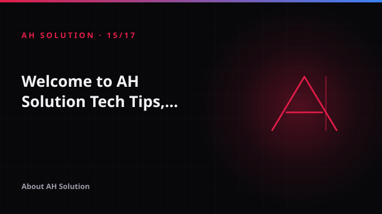
About AH SolutionWelcome to AH Solution: Tech Tips, Tutorials aur Digital Guides
Technology kabhi itni fast nahi rahi jitni aaj hai – naye phones, naye apps, Windows updates, gadgets har roz nikalte hain. Isi simple idea ke saath AH Solution shuru hua tha: technology ko complicated na banayein, balki aam user ke level par samjhaayein.
 PC & software
PC & softwareBefore setting a video as your PC wallpaper
A practical checklist for setup, performance, and keeping your desktop usable.
 Mobile safety
Mobile safetyA quick safety checklist before installing an app
Check the developer, permissions, privacy details, reviews, and source.
 Buying guides
Buying guidesWhat to check before buying a budget smartwatch
Compare what matters in daily use — not only the number of features on the box.